Технология I-Strong Энержи
Узел 1
Узел 2
Узел 3
Узел 4
Узел 5
Узел 6
Узел 7
Узел 8
Узел 9
Узел 10
Узел 11
Узел 12
Узел 13
Узел 14
Узел 15
Узел 16
Узел 17
Узел 1. Ветрозащита и повышенная энергоэффективность.
В технологии строительства каркасного дома I-strong Энержи используются древесно-волокнистые плиты Izoplaat или Steico толщиной 12-25 мм. Эти материалы полностью экологичные, обладают высокими теплоизоляционными свойствами (плотность 200 кг/м3). Плиты защищают стены дома от ветра и прямого попадания влаги в каркас за счет заводской пропитки парафином по всей толщине плиты. Технология I-Strong не предполагает использование специализированной ветровлагозащитной пленки и дополнительного вентзазора между каркасом и плитами. Древесно-волокнистые плиты крепятся непосредственно к каркасу из двутавровых балок. Мы рекомендуем использовать технологию i-strong Энержи только при толщине стоек не менее 270 мм (под утеплитель 200 мм).
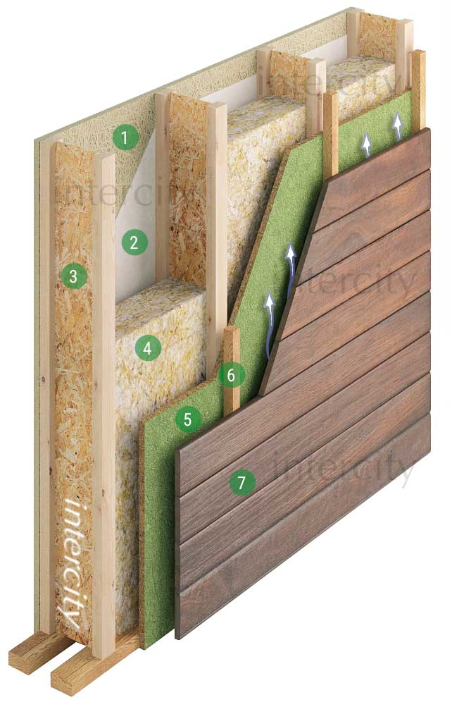
- Внутренняя отделка (ГКЛ, OSB, ЦСП, вагонка, имитация бруса и т.д.)
- Пароизоляционная мембрана
- Каркас дома из деревянных двутавровых балок
- Энергоэффективный утеплитель (Rockwool, Paroc, Холлофайбер, Knauf, Эковата)
- Плиты ветрозащитные древесно-волокнистые Izoplaat (Steico) 12-25 мм
- Обрешетка с вентилируемым зазором 40 или 50 мм
- Фасадная отделка (планкен лиственницы, имитация бруса, фибролитовые панели, фиброцементный сайдинг, виниловый сайдинг, навесные декоративные панели и т.д.)
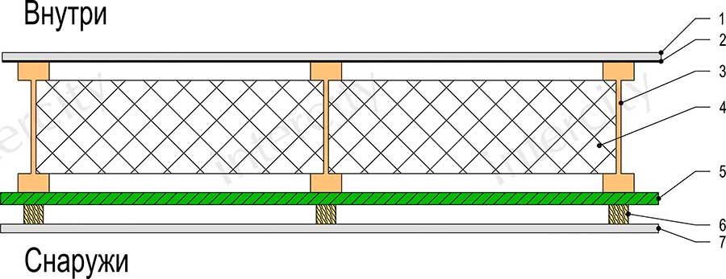
Узел 2. Непрерывное утепление. Цоколь - стены 1 этажа.
Концепция непрерывного утепления дома "от фундамента до конька" - важнейшая идея современного дома. Высокие показатели теплозащиты - это не просто снижение затрат при эксплуатации дома, но, самое главное, это комфортное проживание семьи в доме, в котором каждый квадратный метр действительно теплый. Технология I-strong предполагает такие узловые решения, при которых энергоэффективный утеплитель устанавливается непрерывно от цокольного перекрытия до конька по всей высоте стены, без мостиков холода. Такое решение возможно только при использовании двутавровых балок в качестве стоек и разделенных обвязочных брусков.
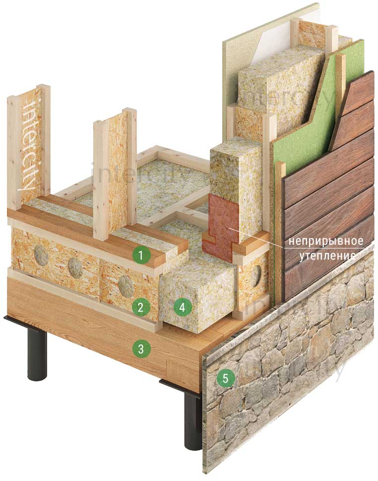
- Утепленная нижняя обвязка каркаса из двутавровых балок
- Блокировочные перфорированные балки перекрытия
- Обвязочный брус по фундаменту
- Утеплитель в цокольном перекрытии
- Материал отделки цоколя (цокольный сайдинг, навесные декоративные панели, плиты ЦСП со штукатуркой и т.д.)
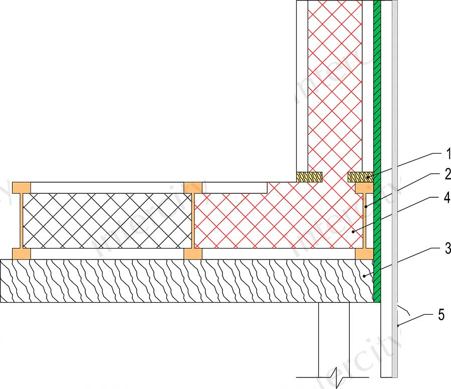
Узел 3. Вентилируемый цоколь
Цокольное перекрытие - одна из самый сложных конструкций с точки зрения защиты от влаги. Влага от земли поднимается постоянно и достаточно в больших количествах. Какой бы качественной не была гидроизоляционная мембрана, часть паров может попасть в утеплитель и понизить его свойства. Эта проблема решена в технологии i-strong при помощи перфорации торцевых двутавровых балок и созданием вентилируемого цоколя. Задачей вентилируемого цоколя является удаление излишней влаги из перекрытия.
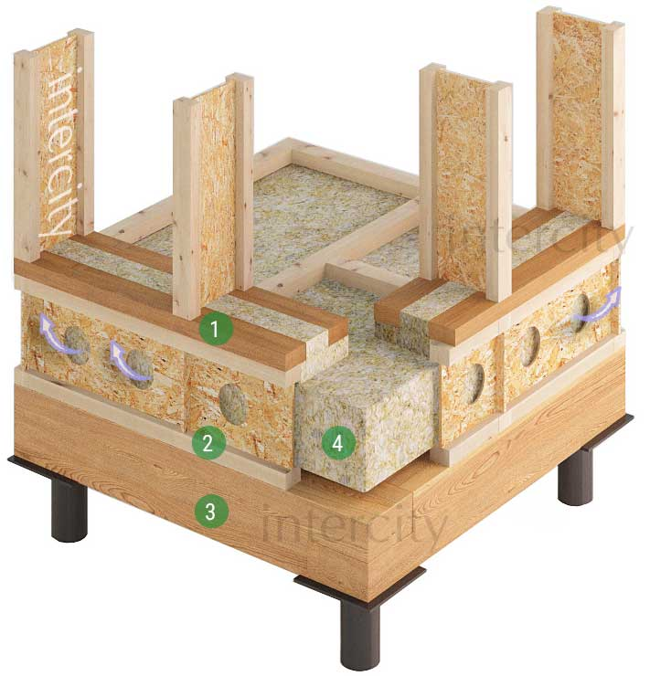
- Утепленная нижняя обвязка каркаса из двутавровых балок
- Блокировочные перфорированные балки перекрытия
- Обвязочный брус по фундаменту
- Утеплитель в цокольном перекрытии
Узел 4. Непрерывное утепление. Звукоизоляция межэтажного перекрытия.
Непрерывное утепление предотвращает не только потери тепла, но и препятствует распространению звуковых волн через стыки элементов. Шумы и голоса хорошо гасятся утеплителем только в том случае, если комната изолирована полностью, без разрывов. В межэтажном перекрытии, также как в цокольном, перфорируются контурные двутавровые балки для выхода излишней влажности из перекрытия.
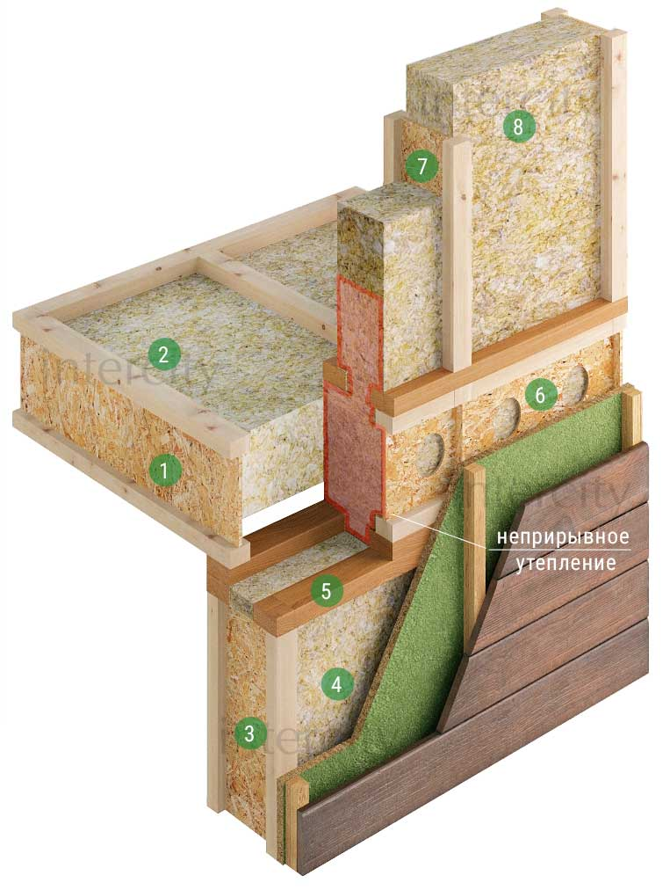
- Деревянные двутавровые балки (основные лаги перекрытия)
- Утепление межэтажного перекрытия
- Стойки 1 этажа из двутавровых балок
- Утепление 1 этажа
- Обвязка по стенам 1 этажа
- Перфорированные торцевые балки межэтажного перекрытия
- Стойки 2 этажа из двутавровых балок
- Утепление 2 этажа
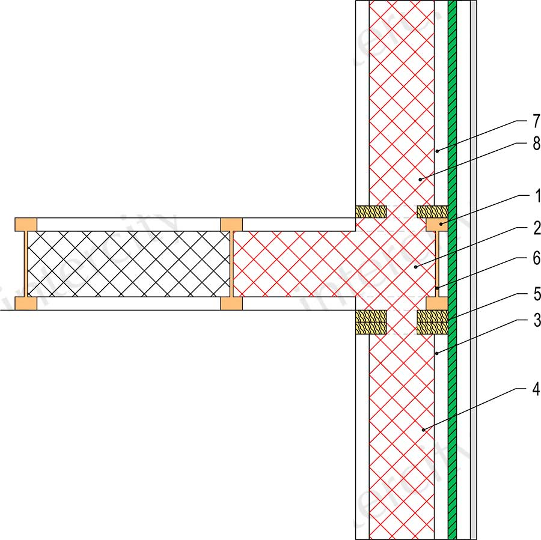
Узел 5. Осисимметричность силовых элементов
Осисимметичность (соосность) силовых элементов необходима для правильной передачи нагрузки с верхних конструкций на нижние и для удобства укладки утеплителя по контуру стен. Тем самым мы добиваемся "монолитности" конструкции с точки зрения жесткости и теплозащиты. Соосность можно создать в том случае, если шаг стоек в стенах, шаг лаг перекрытий и стропил совпадают. Мы рекомендуем использовать шаг 600 мм во всех конструкциях и подбирать сечения балок в соответствии с данным шагом.
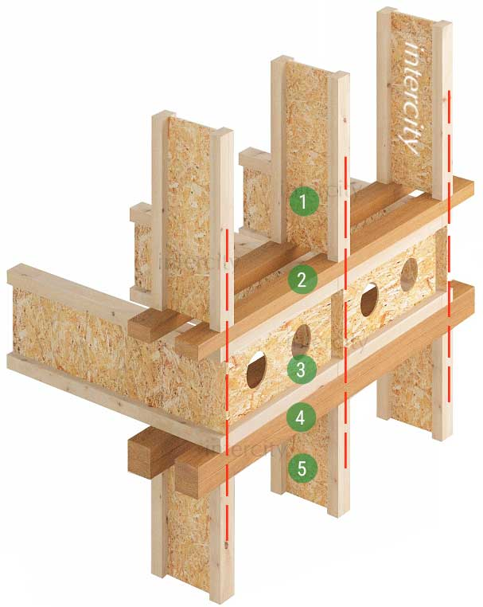
- Стойки 2 этажа из двутавровых балок
- Нижняя обвязка стен 2 этажа
- Конструкция перекрытия из двутавровых балок
- Верхние обвязки 1 этажа
- Стойки 1 этажа из двутавровых балок
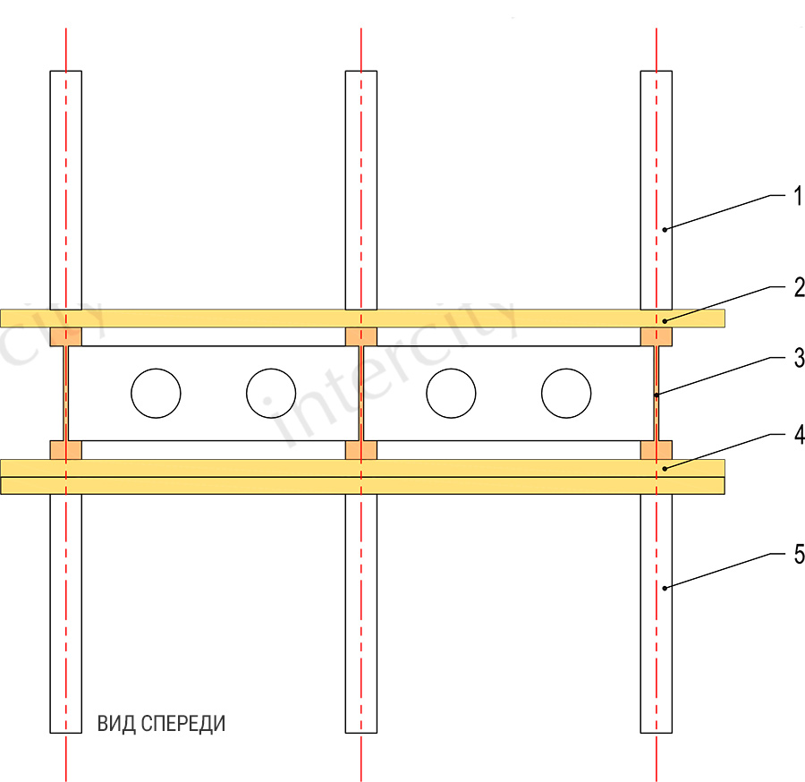
Узел 6. Двойная обвязка по стенам
Стены каркасного дома по технологии i-strong собираются в горизонтальном положении, потом поднимаются вертикально в проектное положение. Первая обвязка (3) является связью между стойками. Вторая обвязка (4) перекрывает все стыки при сопряжении стен (угловые, внутренние T-образные) и создает дополнительную жесткость конструкции в горизонтальном направлении. Между обвязочными брусками 35х90 мм остается технологическое расстояние от 40 до 90 мм в зависимости от толщины стен для укладки утеплителя.
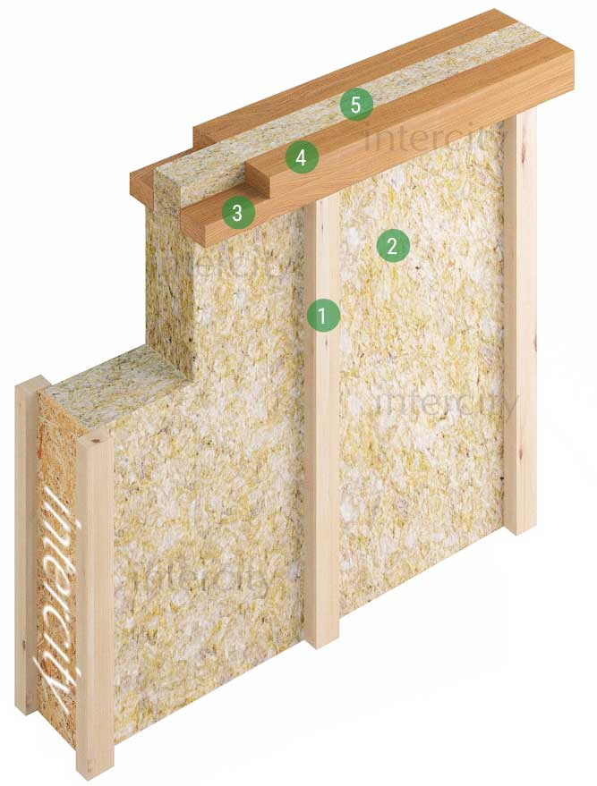
- Стеновые стойки из двутавровых балок
- Утепление между стойками
- Первая обвязка стеновых стоек
- Вторая обвязка стеновых стоек
- Утепление между обвязочными брусками
Узел 7. Усиление каркаса. Связь стоек 1 и 2 этажей перфолентой
Мы стремимся создавать такой дом, который сочетает в себе лучшие свойства каменного - жесткость, ощущение "монолитности", и каркасного - энергоэффективность. "Монолитность" каркаса обеспечивается рядом факторов: толщина стен (устойчивость), усиленные балки перекрытия (отсутствие прогибов и вибраций), осисимметричность (осевая передача нагрузок), жесткие узловые решения. Одним из узловых решений, приводящих к увеличению жесткости каркаса, является связь перфолентой стоек 1 и 2 этажей. Такое решение позволяет снижать горизонтальные вибрации в доме, в том числе от шагов.
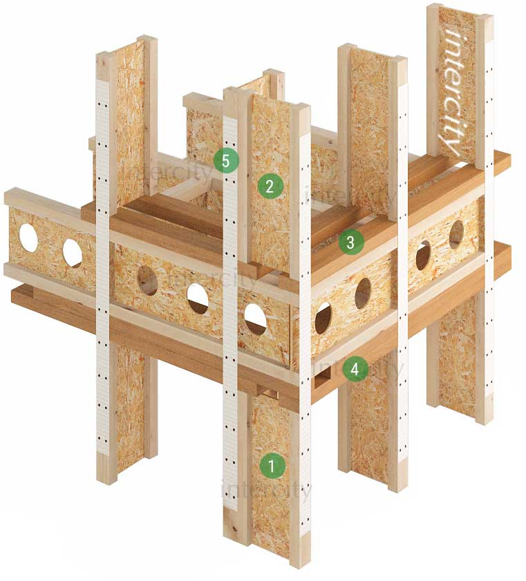
- Стеновые стойки 1 этажа
- Стеновые стойки 2 этажа
- Нижняя обвязка стоек 2 этажа
- Двойная обвязка стоек 1 этажа
- Перфолента
Узел 8. Угловое соединение наружных стен
Мы применяем классическое решение углового соединения для наружных стен - "лестница". В крайней секции устанавливаются блокировочные балки с шагом 600 мм по всей высоте стены. Блокировочные балки служат как дополнительные точки для крепления приходящей стены, а также для создания пространственной жесткости угла.
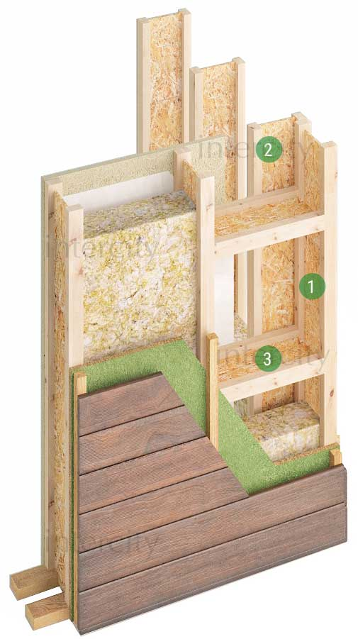
- Стеновые стойки наружной проходящей стены
- Стеновые стойки наружной приходящей стены
- Горизонтальные связи (блок балки) в угловых секциях
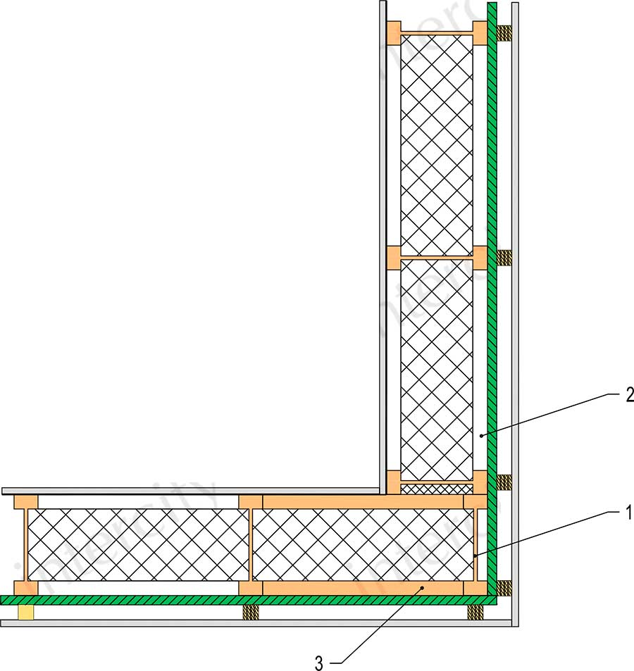
Узел 9. Примыкание внутренней перегородки к наружной стене
C точки зрения пространственной жесткости внутренние стены и перегородки играют важную роль в каркасном доме. В большинстве случаев они примыкают перпендикулярно к наружным стенам, тем самым создавая конструктивно устойчивый Т-образный узел. Правильное и рекомендуемое соединение взаимно перпендикулярных стен - соединение типа "лестница". В секции стены, к которой подходит перпендикулярная стена, ставятся блокировочные балки с шагом 600 мм по всей высоте стены, к ним уже крепится внутренняя стена. Таким способом мы получаем жесткий узел, удобство при дальнейшем утеплении и монтаже внутреннее отделки.
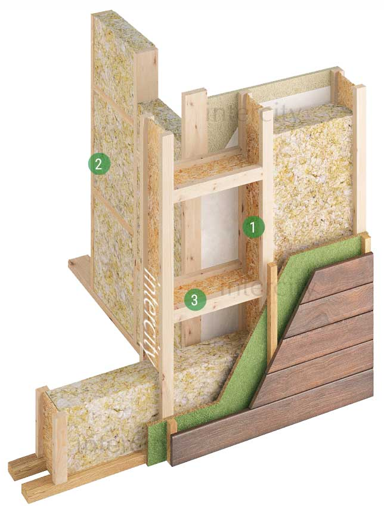
- Стеновые стойки наружной стены
- Стеновые стойки внутренней перегородки
- Горизонтальные связи (блок балки) в угловых секциях
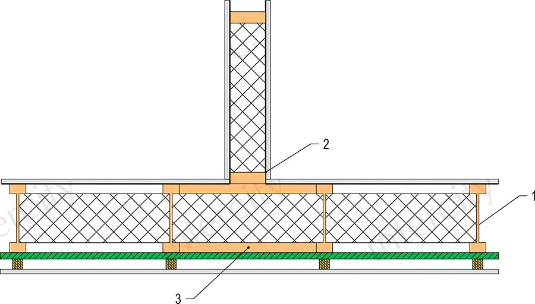
Узел 10. Устройство оконного проема
Конструкция оконного проема - самонесущая рама, которая воспринимает нагрузки от вышележащих элементов и защищает окно от деформаций. Верхний надоконный ригель сделан из двух двутавровых балок, расположенных вертикально. Нижняя подоконная планка - горизонтальная двутавровая балка с полным односторонним заполнением. С двух сторон от проема добавлены бруски 40х40 и выполнено полное заполнение плитами OSB или доской. Боковое и нижнее заполнение необходимо для крепления оконной конструкции в проем.
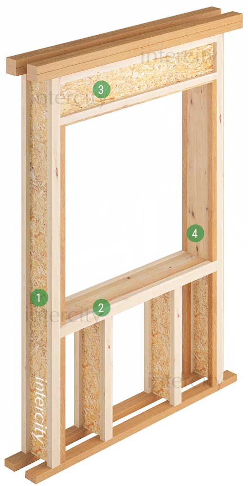
- Стеновая стока из двутавровой балки
- Подоконная планка- двутавровая балка с заполнением доской/OSB-3
- Надоконный ригель, состоящий из двух двутавровых балок
- Вертикальное заполнение доской/OSB-3
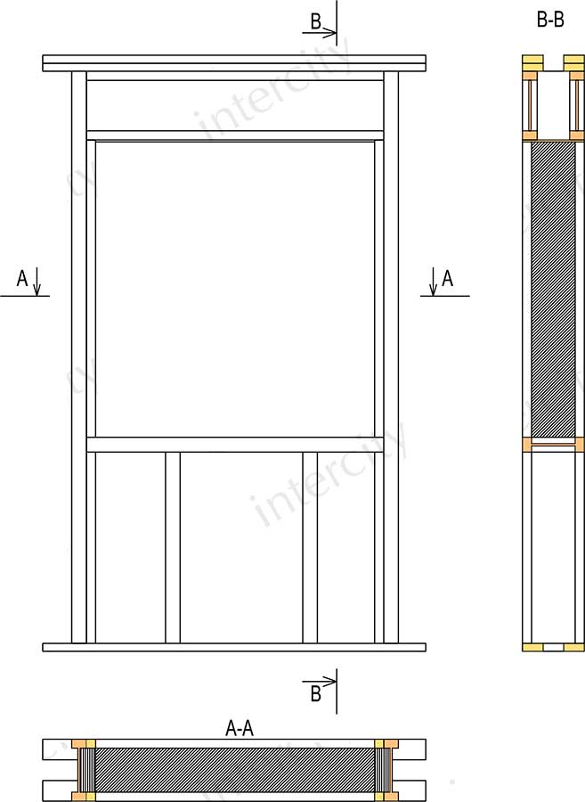
Узел 11. Межэтажное перекрытие
Для межэтажного перекрытия используется стандартное решение "пирога" для деревянных двутавровых балок. На нижнюю полку двутавровых балок монтируется обрешетка из ламелей (полосок) OSB с шагом 600 мм, на полоски укладывается утеплитель. Сверху и снизу натягиваются пароизоляционные мембраны (для цокольного перекрытия снизу - гидроизоляционная, сверху - пароизоляционная). Непосредственно на мембрану сверху монтируются плиты (шпунтованная доска) чернового пола, далее чистовое покрытие. Снизу перекрытия подшивается потолок. В случае, если необходимо сделать обрешетку под потолком, например, для прокладки коммуникаций, то обрешетка монтируется непосредственно к двутавровым балкам.
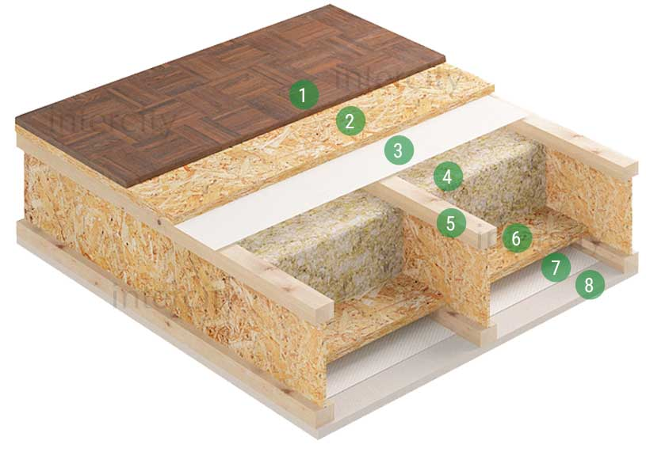
- Чистовое покрытие пола (паркет, ламинат, плитка со стяжкой и т.д.)
- Черновой пол: плиты OSB-3, фанера, ЦСП, GreenBoard, ГСП
- Пароизоляционная мембрана
- Утепление/звукоизоляция
- Лаги перекрытия (деревянные двутавровые балки)
- Обрешетка/поддержка утеплителя на нижней полке двутавровых балок
- Пароизоляционная мембрана
- Подшив потолка и чистовая отделка потолка
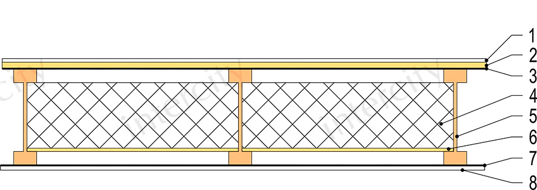
Узел 12. Опирание стропильной системы на мансардные стены
Стропильная система опирается либо на обвязку стен, либо на брус мауэрлата. В первом случае, площадка опирания увеличивается при помощи деревянной призмы, а крепление происходит на усиленные уголки. Во втором - брус мауэрлата запиливается под нужным углом. В местах опирания стропила из двутавровых балок заполняются до полного сечения доской или плитами OSB.
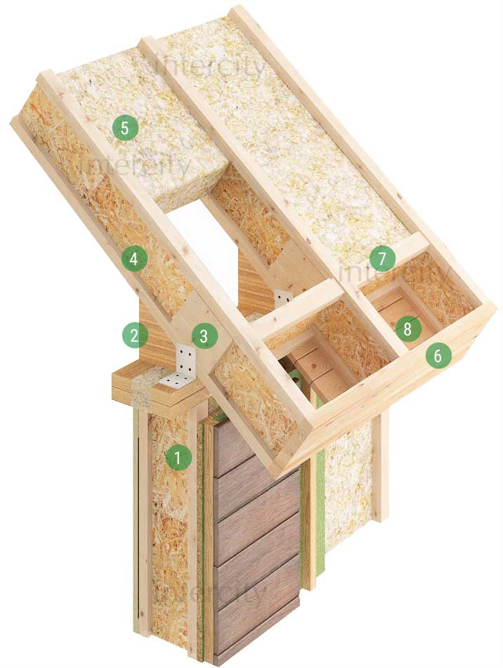
- Стеновая конструкция i-strong Энержи
- Деревянная опорная призма
- Заполнение двутавровой балки до полного сечения
- Стропила из двутавровых балок
- Утепление
- Лобовая доска
- Двутавровые блок-балки
- Подшив карнизных свесов
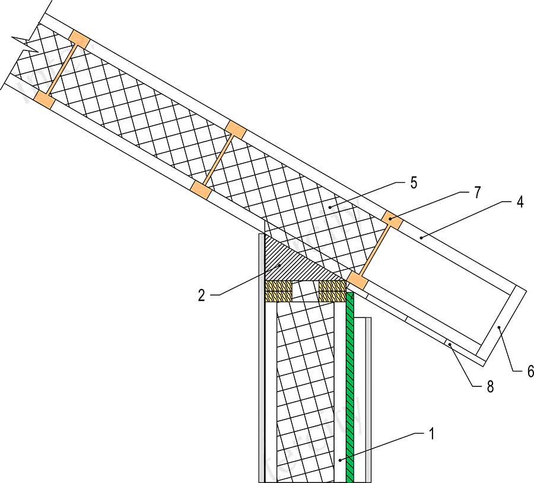
Узел 13. Устройство кровли с покрытием металлочерепицей. Карниз.
На стропила из двутавровых балок монтируется пленка гидроизоляционной кровельной мембраны по всей плоскости кровли. Торец кровли обрамляется металлическим капельником (7), мембрана заходит на капельник (7). На мембрану по всей длине стропильных ног устанавливается контробрешетка 40х40 (50х50) для создания вентзазора. Перпендикулярно контробрешетке монтируется обрешетка 25х100 мм с шагом равным шагу волны металлочерепицы. К обрешетке на карнизах крепятся крюки водосточной системы и второй капельник (9). Листы металлочерепицы монтируются снизу вверх с перехлестом в одну волну. Подшив потолка мансарды можно осуществлять непосредственно к двутавровым балкам.
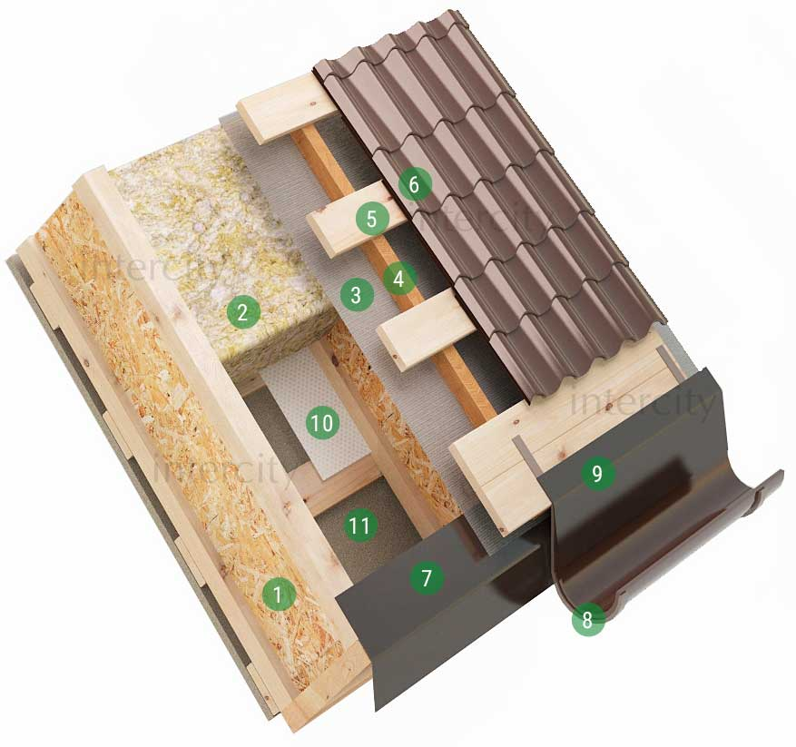
- Стропила из двутавровых балок
- Утепление
- Гидроизоляционная мембрана
- Контробрешетка
- Обрешетка
- Металлочерепица
- Капельник нижний
- Водосточный крюк и желоб
- Капельник верхний
- Пароизоляционная мембрана
- Подшив стропильной системы, чистовая отделка потолков
Узел 14. Устройство кровли с покрытием металлочерепицей. Конек.
Существует два способа монтажа стропильной системы из двутавровых балок на коньке - внахлест и встык. Более надежным и простым решением является монтаж внахлест, где стропила стягиваются между собой двумя шпильками. Обрешетка и контобрешетка не должны доходить до верхнего края стропил, оставляя возможность воздуху и влаге свободно выходить из подкровельного пространства. Между коньковым элементом и листами металлочерепицы обязательно устанавливается уплотнитель.
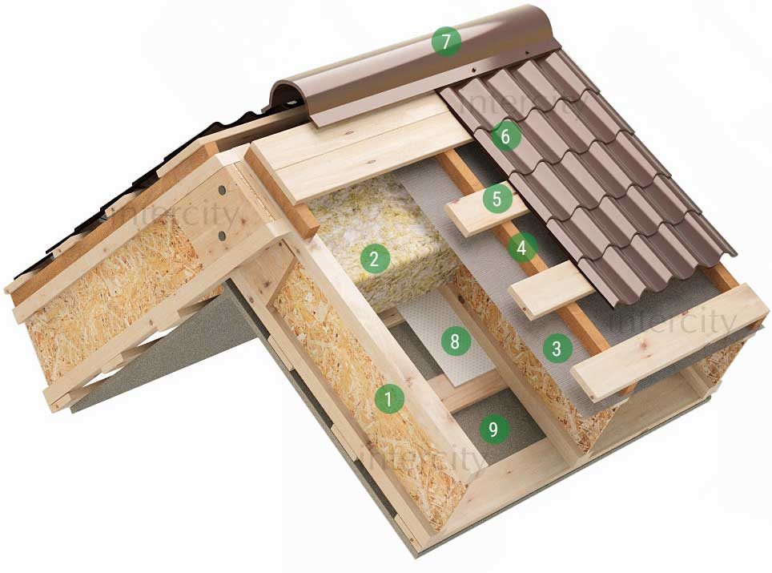
- Стропила из двутавровых балок
- Утепление
- Гидроизоляционная мембрана
- Контробрешетка
- Обрешетка
- Металлочерепица
- Коньковый элемент
- Пароизоляционная мембрана
- Подшив стропильной системы, чистовая отделка потолков
Узел 15. Устройство кровли с покрытием гибкой черепицей. Карниз.
На стропила из двутавровых балок монтируется пленка гидроизоляционной кровельной мембраны по всей плоскости кровли. Торец кровли обрамляется металлическим капельником (9), мембрана заходит на капельник (9). На мембрану по всей длине стропильных ног устанавливается контробрешетка 40х40 (50х50) для создания вентзазора. Перпендикулярно контробрешетке монтируется обрешетка 25х100 мм с шагом 250-300 мм. К обрешетке на карнизах крепятся крюки водосточной системы и второй капельник (11). На обрешетку укладываются листы OSB-3 толщиной 9 мм. Поверх литов OSB расстилается подкладочный ковер. Гибкая черепица монтируется снизу вверх. Подшив потолка мансарды можно осуществлять непосредственно к двутавровым балкам.
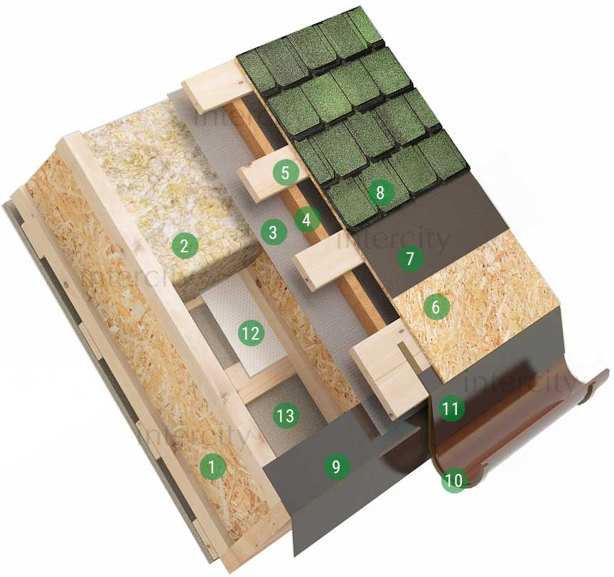
- Стропила из двутавровых балок
- Утепление
- Гидроизоляционная мембрана
- Контробрешетка
- Обрешетка
- Обрешетка плитами OSB-3
- Подкладочный ковер под гибкую черепицу
- Гибкая черепица
- Капельник нижний
- Водосточный крюк и желоб
- Капельник верхний
- Пароизоляционная мембрана
- Подшив стропильной системы, чистовая отделка потолков
Узел 16. Устройство кровли с покрытием гибкой черепицей. Конек.
В местах соединения на коньке деревянные двутавровые балки заполняются до полного сечения доской или плитами OSB. Обрешетка и контобрешетка не должны доходить до верхнего края стропил, оставляя возможность воздуху и влаге свободно выходить из подкровельного пространства. На конек устанавливается специальный элемент - коньковый аэратор, который защищает конек от попадания влаги.
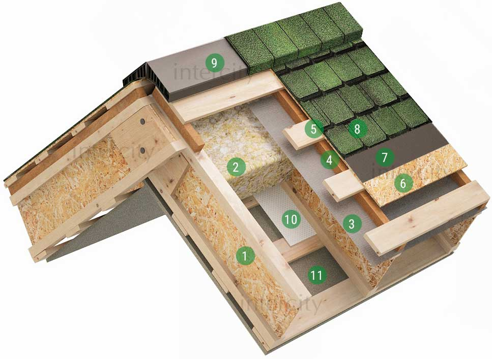
- Стропила из двутавровых балок
- Утепление
- Гидроизоляционная мембрана
- Контробрешетка
- Обрешетка
- Обрешетка плитами OSB-3
- Подкладочный ковер под гибкую черепицу
- Гибкая черепица
- Коньковый аэратор
- Пароизоляционная мембрана
- Подшив стропильной системы, чистовая отделка потолков
Узел 17. Устройство эксплуатируемой кровли.
При устройстве эксплуатируемой кровли на двутавровые балки (лаги) устанавливаются бруски разуклонки, которые прижимают гидроизоляционную подкровельную мембрану, а также задают уклон кровли. На них монтируется обрешетка с шагом 250 мм и плиты OSB-3 18 мм. На плитах расстилается гидроизоляция для плоских кровель (ПВХ мембрана). В случае эксплуатируемой кровли, на мембрану устанавливаются, но не прибиваются направляющие из бруска или специализированные регулируемые опоры, по которым устраивается покрытие.
- Покрытие эксплуатируемой кровли (террасная доска)
- Обрешетка под покрытие
- Гидроизоляционная мембрана эксплуатируемой кровли
- Обрешетка из OSB-3, фанеры, ЦСП
- Обрешетка доской
- Контробрешетка клиновидными направляющими для создания уклона
- Ветровлагозащитная мембрана
- Утеплитель
- Двутавровые балки перекрытия
- Обрешетка/поддержка утеплителя на нижней полке двутавровых балок
- Пароизоляционная мембрана
- Подшив потолка и чистовая отделка потолка